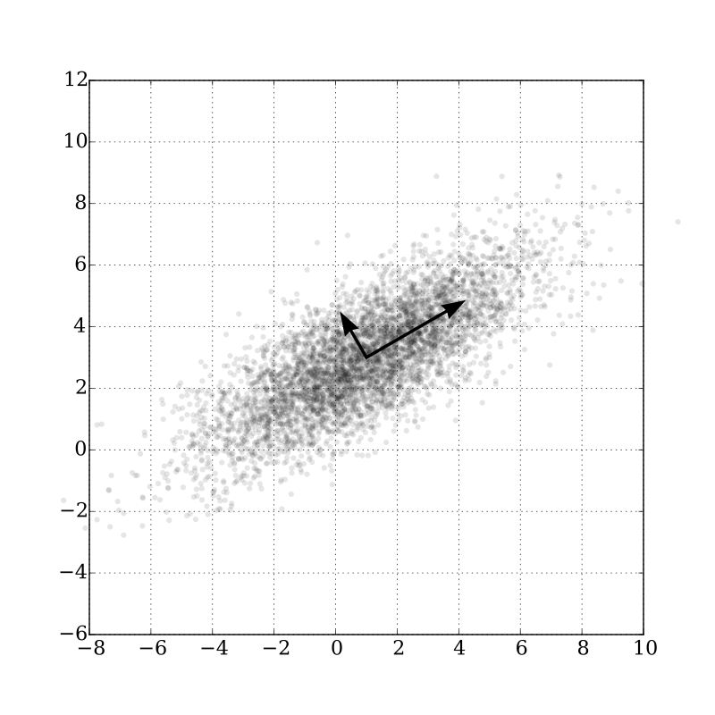

# A tibble: 552 × 15,870
.id bclass adams afternoon agent android app arkansas arrest arrive
<chr> <fct> <dbl> <dbl> <dbl> <dbl> <dbl> <dbl> <dbl> <dbl>
1 url1 relevant 0.0692 0.0300 0.0365 0.0450 0.0330 0.0390 0.0140 0.0305
2 url10 irrelev… 0 0 0 0 0 0 0 0
3 url100 irrelev… 0 0 0 0 0 0 0 0
4 url101 relevant 0 0 0 0 0 0 0 0
5 url102 relevant 0 0 0 0 0 0 0 0
6 url105 relevant 0 0 0 0 0 0 0 0
7 url106 irrelev… 0 0 0 0 0 0 0 0
8 url107 irrelev… 0 0 0 0 0 0 0 0
9 url108 relevant 0 0 0 0 0 0 0 0
10 url109 irrelev… 0 0 0 0 0 0 0 0
# ℹ 542 more rows
# ℹ 15,860 more variables: assist <dbl>, attic <dbl>, barricade <dbl>,
# block <dbl>, blytheville <dbl>, burn <dbl>, captain <dbl>, catch <dbl>,
# check <dbl>, chemical <dbl>, copyright <dbl>, county <dbl>, custody <dbl>,
# dehydration <dbl>, demand <dbl>, department <dbl>, desktop <dbl>,
# device <dbl>, dispute <dbl>, division <dbl>, drug <dbl>, enter <dbl>,
# exit <dbl>, family <dbl>, federal <dbl>, fire <dbl>, force <dbl>, …Multinomial logistic regression
PSTAT197A/CMPSC190DD Fall 2025
Dr Coburn
UCSB
Dimension reduction
From last time
Last time we ended having constructed a TF-IDF document term matrix for the claims data.
\(n = 552\) observations
\(p = 15,868\) variables (word tokens)
binary (rather than multiclass) labels
High dimensionality, again
Similar to the ASD data, we again have \(p > n\): more predictors than observations.
But this time, model interpretation is not important.
The goal is prediction, not explanation.
Individual tokens aren’t likely to be strongly associated with the labels, anyway.
So we have more options for tackling the dimensionality problem.
Sparsity
Another way of saying we have 15,868 predictors is that the predictor is in 15,868-dimensional space.
Projection
Since >99% of data values are zero, there is almost certainly a low(er)-dimensional representation that well-approximates the full ~16K-dimensional predictor.
So here’s a strategy:
project the predictor onto a subspace
fit a logistic regression model using the projected data
Principal components
The principal components of a data matrix \(X\) are an orthogonal basis (i.e., coordinate system) for its column space such that the variance of data projections is maximized along each direction.
subcollections of PC’s span subspaces
used to find a projection that preserves variance
- choose the first \(k\) PC’s along which the projected data retain XX% of total variance
Illustration

Image from wikipedia.
Computation
The principal components can be computed by singular value decomposition (SVD):
\[ X = UDV' \]
columns of \(V\) give the projections
diagonals of \(D\) give the standard deviations on each direction
Selecting components
Find the smallest number of components such that the proportion of variance retained exceeds a specified value:
\[ n_{pc} = \min \left\{i: \frac{\sum_{j = 1}^i d_{jj}^2}{\sum_i d_{ii}^2} > q\right\} \]
Select the corresponding projections and project the data:
\[ \tilde{X} = XV_{1:n_{pc}} \quad\text{where}\quad V_{1:n_{pc}} = \left( v_1 \;\cdots\; v_{n_{pc}}\right) \]
Projected data are referred to as ‘scores’.
Implementation
Usually prcomp() does the trick, and has a broom::tidy method available, but it’s slow for large matrices.
Better to use SVD implemented with sparse matrix computations.
Time difference of 0.687222 secsTime difference of 13.02946 secsTime difference of 12.34224 secsObtaining projections
For today, we’ll use a function to obtain principal components. It’s basically a wrapper around sparsesvd().
The following will return the data projected onto a subspace in which it retains at least .prop percent of the total variance.
# A tibble: 552 × 63
pc1 pc2 pc3 pc4 pc5 pc6 pc7 pc8 pc9
<dbl> <dbl> <dbl> <dbl> <dbl> <dbl> <dbl> <dbl> <dbl>
1 5.24e-6 -7.68e-5 0.0135 -2.26e-4 0.00137 -0.00586 0.00255 -4.79e-3 0.0292
2 1.03e-5 -3.51e-4 0.00205 -2.46e-2 0.0627 -0.00335 0.00468 -1.91e-3 0.0661
3 1.00e-5 -6.56e-5 0.00281 -2.10e-4 0.00532 -0.00970 0.00158 -2.10e-3 0.0392
4 9.92e-6 -1.74e-3 0.00527 -1.32e-3 0.00296 -0.0821 0.297 1.48e-2 0.0614
5 3.90e-6 -7.43e-5 0.00575 -4.68e-4 0.00245 -0.00441 0.00891 -1.97e-3 0.0209
6 6.65e-6 -1.61e-3 0.0546 -8.38e-4 0.00198 -0.0342 0.119 -1.18e-2 0.0699
7 4.95e-6 -1.74e-4 0.00415 -6.60e-4 0.00170 -0.00907 0.0245 -2.75e-3 0.0600
8 7.46e-6 -1.41e-4 0.00101 -2.58e-4 0.00130 -0.00273 0.00336 -8.41e-4 0.0267
9 2.01e-5 -4.44e-4 0.00172 -5.78e-4 0.00157 -0.0133 0.0397 3.82e-4 0.0609
10 6.76e-7 -6.03e-5 0.00288 -9.14e-4 0.00397 -2.05 -0.537 2.95e-2 -0.0998
# ℹ 542 more rows
# ℹ 54 more variables: pc10 <dbl>, pc11 <dbl>, pc12 <dbl>, pc13 <dbl>,
# pc14 <dbl>, pc15 <dbl>, pc16 <dbl>, pc17 <dbl>, pc18 <dbl>, pc19 <dbl>,
# pc20 <dbl>, pc21 <dbl>, pc22 <dbl>, pc23 <dbl>, pc24 <dbl>, pc25 <dbl>,
# pc26 <dbl>, pc27 <dbl>, pc28 <dbl>, pc29 <dbl>, pc30 <dbl>, pc31 <dbl>,
# pc32 <dbl>, pc33 <dbl>, pc34 <dbl>, pc35 <dbl>, pc36 <dbl>, pc37 <dbl>,
# pc38 <dbl>, pc39 <dbl>, pc40 <dbl>, pc41 <dbl>, pc42 <dbl>, pc43 <dbl>, …Activity 1 (10 min)
- Partition the claims data into training and test sets.
- Using the training data, find principal components that preserve at least 80% of the total variance and project the data onto those PCs.
- Fit a logistic regression model to the training data with binary class labels.
Call:
glm(formula = bclass ~ ., family = "binomial", data = train)
Coefficients:
Estimate Std. Error z value Pr(>|z|)
(Intercept) 8.969e+13 1.290e+07 6951279 <2e-16 ***
pc1 1.218e+15 7.826e+06 155668441 <2e-16 ***
pc2 -3.013e+14 1.682e+07 -17912687 <2e-16 ***
pc3 -1.375e+13 2.562e+07 -536559 <2e-16 ***
pc4 2.119e+14 2.353e+07 9006531 <2e-16 ***
pc5 3.444e+15 3.515e+07 97993799 <2e-16 ***
pc6 3.187e+15 3.217e+07 99077262 <2e-16 ***
pc7 8.200e+14 5.172e+07 15853695 <2e-16 ***
pc8 1.139e+15 4.750e+07 23970317 <2e-16 ***
pc9 -1.830e+15 6.783e+07 -26975529 <2e-16 ***
pc10 2.268e+14 7.991e+07 2837697 <2e-16 ***
pc11 6.614e+14 4.549e+07 14540419 <2e-16 ***
pc12 -2.455e+15 5.498e+07 -44657930 <2e-16 ***
pc13 -3.513e+15 4.312e+07 -81488997 <2e-16 ***
pc14 -2.022e+15 4.319e+07 -46805283 <2e-16 ***
pc15 -5.566e+15 4.869e+07 -114310871 <2e-16 ***
pc16 3.719e+15 4.645e+07 80069218 <2e-16 ***
pc17 3.293e+15 6.818e+07 48303477 <2e-16 ***
pc18 -6.450e+15 5.482e+07 -117673403 <2e-16 ***
pc19 1.352e+15 5.087e+07 26575945 <2e-16 ***
pc20 5.850e+15 5.072e+07 115333948 <2e-16 ***
pc21 -6.817e+14 4.896e+07 -13924321 <2e-16 ***
pc22 2.874e+15 4.851e+07 59235491 <2e-16 ***
pc23 -3.809e+15 4.909e+07 -77595159 <2e-16 ***
pc24 6.122e+14 5.029e+07 12173266 <2e-16 ***
pc25 -4.640e+15 5.199e+07 -89241381 <2e-16 ***
pc26 4.539e+15 5.156e+07 88030012 <2e-16 ***
pc27 -4.174e+15 5.327e+07 -78346791 <2e-16 ***
pc28 2.953e+15 5.440e+07 54289982 <2e-16 ***
pc29 1.069e+15 5.326e+07 20072730 <2e-16 ***
pc30 2.187e+15 5.707e+07 38311895 <2e-16 ***
pc31 -7.947e+15 5.478e+07 -145076718 <2e-16 ***
pc32 7.734e+15 6.282e+07 123108460 <2e-16 ***
pc33 -6.970e+15 6.047e+07 -115270490 <2e-16 ***
pc34 3.109e+15 5.653e+07 54997302 <2e-16 ***
pc35 1.680e+15 5.778e+07 29084084 <2e-16 ***
pc36 8.518e+15 6.805e+07 125159958 <2e-16 ***
pc37 1.468e+15 6.136e+07 23930666 <2e-16 ***
pc38 2.708e+15 6.403e+07 42294204 <2e-16 ***
pc39 2.450e+15 6.562e+07 37340353 <2e-16 ***
pc40 1.249e+15 6.295e+07 19841745 <2e-16 ***
pc41 8.460e+15 6.226e+07 135874810 <2e-16 ***
pc42 4.934e+15 6.297e+07 78358457 <2e-16 ***
pc43 -2.575e+15 6.913e+07 -37242710 <2e-16 ***
pc44 -4.180e+15 6.376e+07 -65559466 <2e-16 ***
pc45 1.494e+15 6.415e+07 23284365 <2e-16 ***
pc46 -2.304e+15 6.470e+07 -35613111 <2e-16 ***
pc47 5.090e+15 6.543e+07 77791847 <2e-16 ***
pc48 2.760e+15 6.626e+07 41655884 <2e-16 ***
pc49 -3.944e+15 6.713e+07 -58743426 <2e-16 ***
pc50 -1.071e+15 6.602e+07 -16225516 <2e-16 ***
pc51 -7.438e+15 6.664e+07 -111613622 <2e-16 ***
pc52 3.858e+15 6.722e+07 57399133 <2e-16 ***
pc53 -1.306e+15 6.884e+07 -18973414 <2e-16 ***
pc54 -1.732e+13 6.868e+07 -252250 <2e-16 ***
pc55 -9.187e+14 6.885e+07 -13344310 <2e-16 ***
pc56 5.265e+14 6.983e+07 7539762 <2e-16 ***
pc57 -3.550e+15 7.077e+07 -50161507 <2e-16 ***
pc58 -6.991e+15 8.361e+07 -83612106 <2e-16 ***
pc59 -3.589e+14 7.158e+07 -5012955 <2e-16 ***
pc60 3.953e+15 7.195e+07 54941362 <2e-16 ***
pc61 -5.956e+15 8.104e+07 -73490264 <2e-16 ***
pc62 5.230e+15 7.260e+07 72038668 <2e-16 ***
pc63 -1.630e+15 7.283e+07 -22375653 <2e-16 ***
pc64 1.955e+15 7.361e+07 26559315 <2e-16 ***
pc65 -6.290e+15 7.434e+07 -84610175 <2e-16 ***
pc66 6.245e+14 7.465e+07 8365917 <2e-16 ***
pc67 -5.864e+15 7.552e+07 -77644368 <2e-16 ***
pc68 7.408e+15 7.581e+07 97724056 <2e-16 ***
pc69 3.042e+15 7.641e+07 39819113 <2e-16 ***
pc70 -7.215e+15 8.029e+07 -89866060 <2e-16 ***
pc71 -1.252e+15 7.978e+07 -15688143 <2e-16 ***
pc72 1.034e+15 7.785e+07 13278121 <2e-16 ***
pc73 6.041e+15 7.869e+07 76770575 <2e-16 ***
pc74 9.716e+14 7.850e+07 12376660 <2e-16 ***
pc75 7.536e+15 7.954e+07 94738088 <2e-16 ***
pc76 -2.264e+15 8.035e+07 -28174074 <2e-16 ***
pc77 1.507e+16 7.947e+07 189688170 <2e-16 ***
pc78 4.873e+15 8.056e+07 60497637 <2e-16 ***
pc79 -3.298e+15 8.163e+07 -40403171 <2e-16 ***
pc80 3.169e+15 8.047e+07 39376312 <2e-16 ***
pc81 5.715e+15 8.120e+07 70377314 <2e-16 ***
pc82 -1.206e+15 8.471e+07 -14236452 <2e-16 ***
pc83 -5.316e+15 8.312e+07 -63953315 <2e-16 ***
pc84 1.811e+15 8.295e+07 21836750 <2e-16 ***
pc85 4.279e+15 8.398e+07 50956112 <2e-16 ***
pc86 -1.050e+16 8.362e+07 -125576139 <2e-16 ***
pc87 1.860e+15 8.495e+07 21897694 <2e-16 ***
pc88 2.067e+15 8.582e+07 24081087 <2e-16 ***
pc89 8.376e+15 8.541e+07 98060162 <2e-16 ***
pc90 -4.633e+15 8.514e+07 -54414525 <2e-16 ***
pc91 -1.805e+15 8.561e+07 -21078390 <2e-16 ***
pc92 1.076e+15 8.608e+07 12497862 <2e-16 ***
pc93 -6.639e+14 8.661e+07 -7664561 <2e-16 ***
pc94 4.952e+15 8.649e+07 57259950 <2e-16 ***
pc95 -5.769e+15 8.694e+07 -66354488 <2e-16 ***
pc96 -3.816e+15 8.805e+07 -43339202 <2e-16 ***
---
Signif. codes: 0 '***' 0.001 '**' 0.01 '*' 0.05 '.' 0.1 ' ' 1
(Dispersion parameter for binomial family taken to be 1)
Null deviance: 610.97 on 440 degrees of freedom
Residual deviance: 4901.94 on 344 degrees of freedom
AIC: 5095.9
Number of Fisher Scoring iterations: 25 1 2 3 4 5 6
2.220446e-16 1.000000e+00 2.220446e-16 2.220446e-16 1.000000e+00 2.220446e-16
7 8 9 10 11 12
1.000000e+00 2.220446e-16 1.000000e+00 2.220446e-16 2.220446e-16 1.000000e+00
13 14 15 16 17 18
1.000000e+00 1.000000e+00 1.000000e+00 1.000000e+00 1.000000e+00 1.000000e+00
19 20 21 22 23 24
1.000000e+00 1.000000e+00 2.220446e-16 1.000000e+00 2.220446e-16 1.000000e+00
25 26 27 28 29 30
2.220446e-16 1.000000e+00 1.000000e+00 2.220446e-16 1.000000e+00 1.000000e+00
31 32 33 34 35 36
2.220446e-16 2.220446e-16 2.220446e-16 2.220446e-16 1.000000e+00 2.220446e-16
37 38 39 40 41 42
1.000000e+00 1.000000e+00 2.220446e-16 2.220446e-16 1.000000e+00 1.000000e+00
43 44 45 46 47 48
2.220446e-16 2.220446e-16 1.000000e+00 2.220446e-16 1.000000e+00 1.000000e+00
49 50 51 52 53 54
1.000000e+00 2.220446e-16 2.220446e-16 2.220446e-16 2.220446e-16 1.000000e+00
55 56 57 58 59 60
2.220446e-16 2.220446e-16 2.220446e-16 2.220446e-16 1.000000e+00 2.220446e-16
61 62 63 64 65 66
2.220446e-16 1.000000e+00 1.000000e+00 2.220446e-16 2.220446e-16 2.220446e-16
67 68 69 70 71 72
2.220446e-16 1.000000e+00 2.220446e-16 1.000000e+00 1.000000e+00 2.220446e-16
73 74 75 76 77 78
2.220446e-16 1.000000e+00 2.220446e-16 2.220446e-16 2.220446e-16 2.220446e-16
79 80 81 82 83 84
1.000000e+00 2.220446e-16 1.000000e+00 2.220446e-16 1.000000e+00 2.220446e-16
85 86 87 88 89 90
2.220446e-16 2.220446e-16 1.000000e+00 2.220446e-16 1.000000e+00 1.000000e+00
91 92 93 94 95 96
1.000000e+00 1.000000e+00 1.000000e+00 1.000000e+00 1.000000e+00 1.000000e+00
97 98 99 100 101 102
1.000000e+00 1.000000e+00 2.220446e-16 2.220446e-16 1.000000e+00 1.000000e+00
103 104 105 106 107 108
1.000000e+00 1.000000e+00 1.000000e+00 1.000000e+00 2.220446e-16 2.220446e-16
109 110 111 112 113 114
1.000000e+00 1.000000e+00 2.220446e-16 1.000000e+00 1.000000e+00 2.220446e-16
115 116 117 118 119 120
2.220446e-16 1.000000e+00 1.000000e+00 1.000000e+00 2.220446e-16 2.220446e-16
121 122 123 124 125 126
1.000000e+00 1.000000e+00 2.220446e-16 2.220446e-16 2.220446e-16 2.220446e-16
127 128 129 130 131 132
2.220446e-16 1.000000e+00 1.000000e+00 2.220446e-16 1.000000e+00 2.220446e-16
133 134 135 136 137 138
1.000000e+00 1.000000e+00 2.220446e-16 2.220446e-16 1.000000e+00 1.000000e+00
139 140 141 142 143 144
2.220446e-16 2.220446e-16 2.220446e-16 1.000000e+00 2.220446e-16 1.000000e+00
145 146 147 148 149 150
1.000000e+00 1.000000e+00 2.220446e-16 2.220446e-16 1.000000e+00 2.220446e-16
151 152 153 154 155 156
1.000000e+00 1.000000e+00 2.220446e-16 1.000000e+00 1.000000e+00 2.220446e-16
157 158 159 160 161 162
1.000000e+00 2.220446e-16 1.000000e+00 1.000000e+00 1.000000e+00 1.000000e+00
163 164 165 166 167 168
1.000000e+00 2.220446e-16 1.000000e+00 1.000000e+00 2.220446e-16 1.000000e+00
169 170 171 172 173 174
1.000000e+00 1.000000e+00 1.000000e+00 2.220446e-16 1.000000e+00 2.220446e-16
175 176 177 178 179 180
1.000000e+00 2.220446e-16 1.000000e+00 1.000000e+00 1.000000e+00 2.220446e-16
181 182 183 184 185 186
2.220446e-16 1.000000e+00 2.220446e-16 1.000000e+00 2.220446e-16 1.000000e+00
187 188 189 190 191 192
1.000000e+00 1.000000e+00 1.000000e+00 1.000000e+00 1.000000e+00 2.220446e-16
193 194 195 196 197 198
1.000000e+00 1.000000e+00 1.000000e+00 2.220446e-16 1.000000e+00 2.220446e-16
199 200 201 202 203 204
2.220446e-16 1.000000e+00 1.000000e+00 2.220446e-16 1.000000e+00 2.220446e-16
205 206 207 208 209 210
2.220446e-16 2.220446e-16 2.220446e-16 1.000000e+00 1.000000e+00 1.000000e+00
211 212 213 214 215 216
1.000000e+00 1.000000e+00 2.220446e-16 1.000000e+00 2.220446e-16 1.000000e+00
217 218 219 220 221 222
2.220446e-16 2.220446e-16 1.000000e+00 1.000000e+00 2.220446e-16 2.220446e-16
223 224 225 226 227 228
2.220446e-16 2.220446e-16 2.220446e-16 1.000000e+00 1.000000e+00 2.220446e-16
229 230 231 232 233 234
1.000000e+00 2.220446e-16 1.000000e+00 1.000000e+00 1.000000e+00 1.000000e+00
235 236 237 238 239 240
1.000000e+00 2.220446e-16 2.220446e-16 1.000000e+00 2.220446e-16 1.000000e+00
241 242 243 244 245 246
2.220446e-16 2.220446e-16 1.000000e+00 1.000000e+00 1.000000e+00 1.000000e+00
247 248 249 250 251 252
1.000000e+00 2.220446e-16 1.000000e+00 2.220446e-16 2.220446e-16 2.220446e-16
253 254 255 256 257 258
2.220446e-16 1.000000e+00 1.000000e+00 2.220446e-16 1.000000e+00 1.000000e+00
259 260 261 262 263 264
1.000000e+00 1.000000e+00 1.000000e+00 2.220446e-16 2.220446e-16 1.000000e+00
265 266 267 268 269 270
2.220446e-16 1.000000e+00 2.220446e-16 2.220446e-16 2.220446e-16 2.220446e-16
271 272 273 274 275 276
2.220446e-16 2.220446e-16 2.220446e-16 1.000000e+00 1.000000e+00 2.220446e-16
277 278 279 280 281 282
2.220446e-16 1.000000e+00 2.220446e-16 2.220446e-16 1.000000e+00 1.000000e+00
283 284 285 286 287 288
1.000000e+00 1.000000e+00 2.220446e-16 2.220446e-16 2.220446e-16 1.000000e+00
289 290 291 292 293 294
2.220446e-16 1.000000e+00 2.220446e-16 2.220446e-16 1.000000e+00 2.220446e-16
295 296 297 298 299 300
2.220446e-16 2.220446e-16 1.000000e+00 2.220446e-16 2.220446e-16 1.000000e+00
301 302 303 304 305 306
1.000000e+00 1.000000e+00 2.220446e-16 1.000000e+00 1.000000e+00 1.000000e+00
307 308 309 310 311 312
1.000000e+00 1.000000e+00 1.000000e+00 2.220446e-16 2.220446e-16 1.000000e+00
313 314 315 316 317 318
1.000000e+00 2.220446e-16 1.000000e+00 1.000000e+00 1.000000e+00 1.000000e+00
319 320 321 322 323 324
1.000000e+00 2.220446e-16 1.000000e+00 1.000000e+00 1.000000e+00 2.220446e-16
325 326 327 328 329 330
1.000000e+00 2.220446e-16 2.220446e-16 2.220446e-16 2.220446e-16 1.000000e+00
331 332 333 334 335 336
2.220446e-16 1.000000e+00 2.220446e-16 1.000000e+00 2.220446e-16 1.000000e+00
337 338 339 340 341 342
1.000000e+00 1.000000e+00 1.000000e+00 1.000000e+00 1.000000e+00 1.000000e+00
343 344 345 346 347 348
1.000000e+00 1.000000e+00 1.000000e+00 1.000000e+00 2.220446e-16 1.000000e+00
349 350 351 352 353 354
2.220446e-16 1.000000e+00 1.000000e+00 2.220446e-16 2.220446e-16 2.220446e-16
355 356 357 358 359 360
2.220446e-16 1.000000e+00 2.220446e-16 2.220446e-16 2.220446e-16 2.220446e-16
361 362 363 364 365 366
1.000000e+00 2.220446e-16 2.220446e-16 1.000000e+00 2.220446e-16 1.000000e+00
367 368 369 370 371 372
2.220446e-16 2.220446e-16 1.000000e+00 2.220446e-16 2.220446e-16 1.000000e+00
373 374 375 376 377 378
1.000000e+00 1.000000e+00 2.220446e-16 2.220446e-16 2.220446e-16 2.220446e-16
379 380 381 382 383 384
2.220446e-16 1.000000e+00 1.000000e+00 1.000000e+00 2.220446e-16 1.000000e+00
385 386 387 388 389 390
1.000000e+00 1.000000e+00 2.220446e-16 1.000000e+00 2.220446e-16 1.000000e+00
391 392 393 394 395 396
2.220446e-16 2.220446e-16 2.220446e-16 1.000000e+00 2.220446e-16 2.220446e-16
397 398 399 400 401 402
1.000000e+00 2.220446e-16 1.000000e+00 1.000000e+00 1.000000e+00 1.000000e+00
403 404 405 406 407 408
2.220446e-16 2.220446e-16 2.220446e-16 1.000000e+00 1.000000e+00 1.000000e+00
409 410 411 412 413 414
1.000000e+00 1.000000e+00 2.220446e-16 2.220446e-16 1.000000e+00 1.000000e+00
415 416 417 418 419 420
1.000000e+00 1.000000e+00 1.000000e+00 1.000000e+00 2.220446e-16 1.000000e+00
421 422 423 424 425 426
1.000000e+00 1.000000e+00 1.000000e+00 2.220446e-16 2.220446e-16 1.000000e+00
427 428 429 430 431 432
2.220446e-16 2.220446e-16 2.220446e-16 2.220446e-16 1.000000e+00 2.220446e-16
433 434 435 436 437 438
1.000000e+00 2.220446e-16 1.000000e+00 1.000000e+00 2.220446e-16 2.220446e-16
439 440 441
1.000000e+00 1.000000e+00 2.220446e-16 Overfitting
You should have observed a warning that numerically 0 or 1 fitted probabilities occurred.
- that means the model fit some data points exactly
Overfitting occurs when a model is fit too closely to the training data.
measures of fit suggest high quality
but predicts poorly out of sample
The curious can verify this using the model you just fit.
Another use of regularization
Last week we spoke about using LASSO regularization for variable selection.
Regularization can also be used to reduce overfitting.
LASSO penalty \(\|\beta\|_1 < t\) works
‘ridge’ penalty \(\|\beta\|_2 < t\) also works (but won’t shrink parameters to zero)
or the ‘elastic net’ penalty \(\|\beta\|_1 < t\) AND \(\|\beta\|_2 < s\)
Activity 2 (10 min)
- Follow activity instructions to fit a logistic regression model with an elastic net penalty to the training data.
- Quantify classification accuracy on the test data using sensitivity, specificity, and AUROC.
# A tibble: 4 × 3
.metric .estimator .estimate
<chr> <chr> <dbl>
1 sensitivity binary 0.707
2 specificity binary 0.868
3 accuracy binary 0.784
4 roc_auc binary 0.856Multinomial regression
Quick refresher
The logistic regression model is
\[ \log\left(\frac{P(Y_i = 1)}{P(Y_i = 0)}\right) = \beta_0 + \beta_1 x_{i1} + \cdots + \beta_p x_{ip} \]
This is for a binary outcome \(Y_i \in \{0, 1\}\).
Multinomial response
If the response is instead \(Y \in \{1, 2, \dots, K\}\), its probability distribution can be described by the multinomial distribution (with 1 trial):
\[ P(Y = k) = p_k \quad\text{for}\quad k = 1, \dots, k \quad\text{with}\quad \sum_k p_k = 1 \]
Multinomial regression
Multinomial regression fits the following model:
\[ \begin{aligned} \log\left(\frac{p_1}{p_K}\right) &= \beta_0^{(1)} + x_i^T \beta^{(1)} \\ \log\left(\frac{p_2}{p_K}\right) &= \beta_0^{(2)} + x_i^T \beta^{(2)} \\ &\vdots \\ \log\left(\frac{p_{K - 1}}{p_K}\right) &= \beta_0^{(K - 1)} + x_i^T \beta^{(K - 1)} \\ \end{aligned} \]
So the number of parameters is \((p + 1)\times (K - 1)\).
Prediction
With some manipulation, one can obtain expressions for each \(p_k\), and thus estimates of the probabilities \(\hat{p}_k\) for each class \(k\).
A natural prediction to use is whichever class is most probable:
\[ \hat{Y}_i = \arg\max_k \hat{p}_k \]
Activity 3 (10 min)
Follow instructions to fit a multinomial model to the claims data.
Compute predictions and evaluate accuracy.
Results
# A tibble: 111 × 5
irrelevant physical fatality unlawful other
<dbl> <dbl> <dbl> <dbl> <dbl>
1 0.183 0.0193 0.768 0.0208 0.00896
2 0.698 0.119 0.0770 0.0699 0.0361
3 0.842 0.0383 0.0581 0.0335 0.0280
4 0.572 0.0451 0.0572 0.261 0.0642
5 0.0974 0.0147 0.872 0.00829 0.00733
6 0.762 0.0542 0.0689 0.0837 0.0308
7 0.416 0.0567 0.0795 0.341 0.107
8 0.0800 0.0123 0.892 0.00837 0.00685
9 0.292 0.0306 0.649 0.0119 0.0165
10 0.790 0.0498 0.0780 0.0565 0.0260
# ℹ 101 more rows| fatality | irrelevant | other | physical | unlawful | |
|---|---|---|---|---|---|
| fatality | 12 | 7 | 0 | 0 | 0 |
| irrelevant | 4 | 47 | 1 | 1 | 0 |
| other | 0 | 7 | 0 | 0 | 0 |
| physical | 0 | 7 | 0 | 8 | 0 |
| unlawful | 0 | 6 | 0 | 0 | 11 |
[1] 0.7027027 fatality irrelevant other physical unlawful
0.6315789 0.8867925 0.0000000 0.5333333 0.6470588 fatality irrelevant other physical unlawful
0.7500000 0.6351351 0.0000000 0.8888889 1.0000000 
PSTAT197A/CMPSC190DD Fall 2025